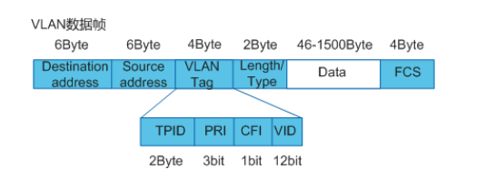

VLAN基础知识
目录
VLAN 简介
定义
VLAN（Virtual Local Area Network）即虚拟局域网，是将一个物理的 LAN 在逻辑上划分成多个广播域的通信技术。VLAN 内的主机间可以直接通信，而 VLAN 间不能直接通信，从而将广播报文限制在一个 VLAN 内。
目的
以太网是一种基于 CSMA/CD（Carrier Sense Multiple Access/Collision Detection）的共享通讯介质的数据网络通讯技术。当主机数目较多时会导致冲突严重、广播泛滥、性能显著下降甚至造成网络不可用等问题。通过交换机实现 LAN 互连虽然可以解决冲突严重的问题，但仍然不能隔离广播报文和提升网络质量。
在这种情况下出现了 VLAN 技术，这种技术可以把一个 LAN 划分成多个逻辑的 VLAN，每个 VLAN 是一个广播域，VLAN 内的主机间通信就和在一个 LAN 内一样，而 VLAN 间则不能直接互通，这样，广播报文就被限制在一个 VLAN 内。
作用
- 限制广播域：广播域被限制在一个 VLAN 内，节省了带宽，提高了网络处理能力。
- 增强局域网的安全性：不同 VLAN 内的报文在传输时是相互隔离的，即一个 VLAN 内的用户不能和其它 VLAN 内的用户直接通信。
- 提高了网络的健壮性：故障被限制在一个 VLAN 内，本 VLAN 内的故障不会影响其他 VLAN 的正常工作。
- 灵活构建虚拟工作组：用 VLAN 可以划分不同的用户到不同的工作组，同一工作组的用户也不必局限于某一固定的物理范围，网络构建和维护更方便灵活。
VLAN 的基本概念
VLAN 标签
要使设备能够分辨不同 VLAN 的报文，需要在报文中添加标识 VLAN 信息的字段。IEEE 802.1Q 协议规定，在以太网数据帧的目的 MAC 地址和源 MAC 地址字段之后、协议类型字段之前加入 4 个字节的 VLAN 标签（又称 VLAN Tag，简称 Tag），用以标识 VLAN 信息。
VLAN 帧格式

图1 VLANtag 格式
字段解释
| 字段 | 长度 | 含义 | 取值 |
|---|---|---|---|
| TPID | 2Byte | Tag Protocol Identifier（标签协议标识符），表示数据帧类型。 | 表示帧类型，取值为 0x8100 时表示 IEEE 802.1Q 的 VLAN 数据帧。如果不支持 802.1Q 的设备收到这样的帧，会将其丢弃。 各设备厂商可以自定义该字段的值。当邻居设备将 TPID 值配置为非 0x8100 时， 为了能够识别这样的报文，实现互通，必须在本设备上修改 TPID 值，确保和邻居设备的 TPID 值配置一致。 |
| PRI | 3bit | Priority，表示数据帧的 802.1p 优先级。 | 取值范围为 0～7，值越大优先级越高。当网络阻塞时，设备优先发送优先级高的数据帧。 |
| CFI | 1bit | Canonical Format Indicator（标准格式指示位），表示 MAC 地址在不同的传输介质中是否以标准格式进行封装，用于兼容以太网和令牌环网。 | CFI 取值为 0 表示 MAC 地址以标准格式进行封装，为 1 表示以非标准格式封装。在以太网中，CFI 的值为 0。 |
| VID | 12bit | VLAN ID，表示该数据帧所属 VLAN 的编号。 | VLAN ID 取值范围是 0～4095。由于 0 和 4095 为协议保留取值，所以 VLAN ID 的有效取值范围是 1～4094。 |
设备利用 VLAN 标签中的 VID 来识别数据帧所属的 VLAN，广播帧只在同一 VLAN 内转发，这就将广播域限制在一个 VLAN 内。
常用设备收发数据帧的 VLAN 标签情况
在一个 VLAN 交换网络中，以太网帧主要有以下两种格式：
- 有标记帧（Tagged 帧）：加入了 4 字节 VLAN 标签的帧。
- 无标记帧（Untagged 帧）：原始的、未加入 4 字节 VLAN 标签的帧。
常用设备中：
- 用户主机、服务器、Hub 只能收发 Untagged 帧。
- 交换机、路由器和 AC 既能收发 Tagged 帧，也能收发 Untagged 帧。
- 语音终端、AP 等设备可以同时收发一个 Tagged 帧和一个 Untagged 帧。
为了提高处理效率，设备内部处理的数据帧一律都是 Tagged 帧。
链路类型和接口类型
设备内部处理的数据帧一律都带有 VLAN 标签，而现网中的设备有些只会收发 Untagged 帧，要与这些设备交互，就需要接口能够识别 Untagged 帧并在收发时给帧添加、剥除 VLAN 标签。同时，现网中属于同一个 VLAN 的用户可能会被连接在不同的设备上，且跨越设备的 VLAN 可能不止一个，如果需要用户间的互通，就需要设备间的接口能够同时识别和发送多个 VLAN 的数据帧。
为了适应不同的连接和组网，设备定义了 Access 接口、Trunk 接口和 Hybrid 接口 3 种接口类型，以及接入链路（Access Link）和干道链路（Trunk Link）两种链路类型。
链路类型
根据链路中需要承载的 VLAN 数目的不同，以太网链路分为：
接入链路
接入链路只可以承载 1 个 VLAN 的数据帧，用于连接设备和用户终端（如用户主机、服务器等）。通常情况下，用户终端并不需要知道自己属于哪个 VLAN，也不能识别带有 Tag 的帧，所以在接入链路上传输的帧都是 Untagged 帧。
干道链路
干道链路可以承载多个不同 VLAN 的数据帧，用于设备间互连。为了保证其它网络设备能够正确识别数据帧中的 VLAN 信息，在干道链路上传输的数据帧必须都打上 Tag。
接口类型
根据接口连接对象以及对收发数据帧处理的不同，以太网接口分为：
Access 接口
Access 接口一般用于和不能识别 Tag 的用户终端（如用户主机、服务器等）相连，或者不需要区分不同 VLAN 成员时使用。它只能收发 Untagged 帧，且只能为 Untagged 帧添加唯一 VLAN 的 Tag。
Trunk 接口
Trunk 接口一般用于连接交换机、路由器、AP 以及可同时收发 Tagged 帧和 Untagged 帧的语音终端。它可以允许多个 VLAN 的帧带 Tag 通过，但只允许一个 VLAN 的帧从该类接口上发出时不带 Tag（即剥除 Tag）。
Hybrid 接口
Hybrid 接口既可以用于连接不能识别 Tag 的用户终端（如用户主机、服务器等）和网络设备（如 Hub），也可以用于连接交换机、路由器以及可同时收发 Tagged 帧和 Untagged 帧的语音终端、AP。它可以允许多个 VLAN 的帧带 Tag 通过，且允许从该类接口发出的帧根据需要配置某些 VLAN 的帧带 Tag（即不剥除 Tag）、某些 VLAN 的帧不带 Tag（即剥除 Tag）。
Hybrid 接口和 Trunk 接口在很多应用场景下可以通用，但在某些应用场景下，必须使用 Hybrid 接口。比如一个接口连接不同 VLAN 网段的场景中，因为一个接口需要给多个 Untagged 报文添加 Tag，所以必须使用 Hybrid 接口。
缺省 VLAN
缺省 VLAN 又称 PVID（Port Default VLAN ID）。前面提到，设备处理的数据帧都带 Tag，当设备收到 Untagged 帧时，就需要给该帧添加 Tag，添加什么 Tag，就由接口上的缺省 VLAN 决定。
接口收发数据帧时，对 Tag 的添加或剥除过程。
- 对于 Access 接口，缺省 VLAN 就是它允许通过的 VLAN，修改缺省 VLAN 即可更改接口允许通过的 VLAN。
- 对于 Trunk 接口和 Hybrid 接口，一个接口可以允许多个 VLAN 通过，但是只能有一个缺省 VLAN。接口的缺省 VLAN 和允许通过的 VLAN 需要分别配置，互不影响。
同类型接口添加或剥除 VLAN 标签的比较：
| 接口类型 | 对接收不带 Tag 的报文处理 | 对接收带 Tag 的报文处理 | 发送帧处理过程 |
|---|---|---|---|
| Access 接口 | 接收该报文，并打上缺省的 VLAN ID。 | 当 VLAN ID 与缺省 VLAN ID 相同时，接收该报文。当 VLAN ID 与缺省 VLAN ID 不同时，丢弃该报文。 | 先剥离帧的 PVID Tag，然后再发送。 |
| Trunk 接口 | 打上缺省的 VLAN ID，当缺省 VLAN ID 在允许通过的 VLAN ID 列表里时，接收该报文。打上缺省的 VLAN ID，当缺省 VLAN ID 不在允许通过的 VLAN ID 列表里时，丢弃该报文。 | 当 VLAN ID 在接口允许通过的 VLAN ID 列表里时，接收该报文。当 VLAN ID 不在接口允许通过的 VLAN ID 列表里时，丢弃该报文。 | 当 VLAN ID 与缺省 VLAN ID 相同，且是该接口允许通过的 VLAN ID 时，去掉 Tag，发送该报文。当 VLAN ID 与缺省 VLAN ID 不同，且是该接口允许通过的 VLAN ID 时，保持原有 Tag，发送该报文。 |
| Hybrid 接口 | 打上缺省的 VLAN ID，当缺省 VLAN ID 在允许通过的 VLAN ID 列表里时，接收该报文。打上缺省的 VLAN ID，当缺省 VLAN ID 不在允许通过的 VLAN ID 列表里时，丢弃该报文。 | 当 VLAN ID 在接口允许通过的 VLAN ID 列表里时，接收该报文。当 VLAN ID 不在接口允许通过的 VLAN ID 列表里时，丢弃该报文。 | 当 VLAN ID 是该接口允许通过的 VLAN ID 时，发送该报文。可以通过命令设置发送时是否携带 Tag。 |
- 当接收到不带 VLAN 标签的数据帧时，Access 接口、Trunk 接口、Hybrid 接口都会给数据帧打上 VLAN 标签，但 Trunk 接口、Hybrid 接口会根据数据帧的 VID 是否为其允许通过的 VLAN 来判断是否接收，而 Access 接口则无条件接收。
- 当接收到带 VLAN 标签的数据帧时，Access 接口、Trunk 接口、Hybrid 接口都会根据数据帧的 VID 是否为其允许通过的 VLAN（Access 接口允许通过的 VLAN 就是缺省 VLAN）来判断是否接收。
当发送数据帧时：
- Access 接口直接剥离数据帧中的 VLAN 标签。
- Trunk 接口只有在数据帧中的 VID 与接口的 PVID 相等时才会剥离数据帧中的 VLAN 标签。
- Hybrid 接口会根据接口上的配置判断是否剥离数据帧中的 VLAN 标签
因此，Access 接口发出的数据帧肯定不带 Tag，Trunk 接口发出的数据帧只有一个 VLAN 的数据帧不带 Tag，其他都带 VLAN 标签，Hybrid 接口发出的数据帧可根据需要设置某些 VLAN 的数据帧带 Tag，某些 VLAN 的数据帧不带 Tag。
VLAN 通信
VLAN 内互访
同一 VLAN 内用户互访（简称 VLAN 内互访）会经过如下三个环节。
用户主机的报文转发
源主机在发起通信之前，会将自己的 IP 与目的主机的 IP 进行比较，如果两者位于同一网段，会获取目的主机的 MAC 地址，并将其作为目的 MAC 地址封装进报文；如果两者位于不同网段，源主机会将报文递交给网关，获取网关的 MAC 地址，并将其作为目的 MAC 地址封装进报文。
设备内部的以太网交换
设备
- 如果目的 MAC 地址+VID 匹配自己的 MAC 表且三层转发标志置位，则进行三层交换，会根据报文的目的 IP 地址查找三层转发表项，如果没有找到会将报文上送 CPU，由 CPU 查找路由表实现三层转发。
- 如果目的 MAC 地址+VID 匹配自己的 MAC 表但三层转发标志未置位，则进行二层交换，会直接将报文根据 MAC 表的出接口发出去。
- 如果目的 MAC 地址+VID 没有匹配自己的 MAC 表，则进行二层交换，此时会向所有允许 VID 通过的接口广播该报文，以获取目的主机的 MAC 地址。
设备之间交互时，VLAN 标签的添加和剥离
设备内部的以太网交换都是带 Tag 的，为了与不同设备进行成功交互，设备需要根据接口的设置添加或剥除 Tag。不同接口 VLAN 标签添加和剥离情况不同。
从以太网交换原理可以看出，划分 VLAN 后，广播报文只在同一 VLAN 内二层转发，因此同一 VLAN 内的用户可以直接二层互访。根据属于同一 VLAN 的主机是否连接在不同的设备，VLAN 内互访有两种场景：同设备 VLAN 内互访和跨设备 VLAN 内互访。
VLAN 间互访
划分 VLAN 后，由于广播报文只在同 VLAN 内转发，所以不同 VLAN 的用户间不能二层互访，这样能起到隔离广播的作用。但实际应用中，不同 VLAN 的用户又常有互访的需求，此时就需要实现不同 VLAN 的用户互访，简称 VLAN 间互访。
同 VLAN 间互访一样，VLAN 间互访也会经过用户主机的报文转发、设备内部的以太网交换、设备之间交互时 VLAN 标签的添加和剥离三个环节。同样，根据以太网交换原理，广播报文只在同一 VLAN 内转发，不同 VLAN 内的用户则不能直接二层互访，需要借助三层路由技术或 VLAN 转换技术才能实现互访。
VLAN 间互访技术
华为提供了多种技术实现 VLAN 间互访，常用的两种技术为 VLANIF 接口和 Dot1q 终结子接口。
VLANIF 接口
VLANIF 接口是一种三层的逻辑接口。在 VLANIF 接口上配置 IP 地址后，设备会在 MAC 地址表中添加 VLANIF 接口的 MAC 地址+VID 表项，并且为表项的三层转发标志位置位。当报文的目的 MAC 地址匹配该表项后，会进行三层转发，进而实现 VLAN 间的三层互通。
VLANIF 配置简单，是实现 VLAN 间互访最常用的一种技术。但每个 VLAN 需要配置一个 VLANIF，并在接口上指定一个 IP 子网网段，比较浪费 IP 地址。
Dot1q 终结子接口
子接口也是一种三层的逻辑接口。跟 VLANIF 接口一样，在子接口上配置 Dot1q 终结功能和 IP 地址后，设备也会添加相应的 MAC 表项并置位三层转发标志位，进而实现 VLAN 间的三层互通。
Dot1q 终结子接口适用于通过一个三层以太网接口下接多个 VLAN 网络的环境。由于不同 VLAN 的数据流会争用同一个以太网主接口的带宽，网络繁忙时，会导致通信瓶颈。
通过 VLANIF 接口实现 VLAN 间互访，必须要求 VLAN 间的用户都只能处于不同的网段（因为相同网段，主机会封装目的主机的 MAC 地址，设备判断进行二层交换，二层交换只在同 VLAN 内，广播报文无法到达不同的 VLAN，获取不到目的主机的 MAC 地址，也就无法实现互通）。现网中，也存在不同 VLAN 相同网段的组网需求，此时可通过 VLAN 聚合实现。
VLAN 聚合（又称 Super VLAN）通过引入 Super-VLAN 和 Sub-VLAN，将一个 Super-VLAN 和多个 Sub-VLAN 关联，多个 Sub-VLAN 共享 Super-VLAN 的 IP 地址作为其网关 IP，实现与外部网络的三层互通；并通过在 Sub-VLAN 间启用 Proxy ARP，实现 Sub-VLAN 间的三层互通，进而即节约 IP 地址资源，又实现 VLAN 间的三层互通。
VLAN 聚合通常用于多个 VLAN 共用一个网关的组网场景。
VLAN Damping
VLAN 抑制
如果指定 VLAN 已经创建对应的 VLANIF 接口，当 VLAN 中所有接口状态变为 Down 而引起 VLAN 状态变为 Down 时，VLAN 会向 VLANIF 接口上报接口 Down 状态，从而引起 VLANIF 接口状态变化。
为避免由于 VLANIF 接口状态变化引起的网络震荡，可以在 VLANIF 接口上启动 VLAN Damping 功能，抑制 VLANIF 接口状态变为 Down 的时间。
当使能 VLAN Damping 功能，VLAN 中最后一个处于 Up 状态的接口变为 Down 后，会抑制一定时间（抑制时间可配置）再上报给 VLANIF 接口。如果在抑制时间内 VLAN 中有接口 Up，则 VLANIF 接口状态保持 Up 状态不变。即 VLAN Damping 功能可以适当延迟 VLAN 向 VLANIF 接口上报接口 Down 状态的时间，从而抑制不必要的路由震荡。
VLAN 内二层隔离
为了实现用户之间的二层隔离，可以将不同的用户加入不同的 VLAN。但若企业规模很大，拥有大量的用户，那么就要为不能互相访问的用户都分配 VLAN，这不但需要耗费大量的 VLAN，还增加了网络管理者配置和维护的工作量。
为此，华为提供了一些 VLAN 内二层隔离技术，如端口隔离、MUX VLAN 和基于 MQC 的 VLAN 内二层隔离等。
端口隔离
端口隔离可实现同一 VLAN 内端口之间的隔离。用户只需要将端口加入到隔离组中，就可以实现隔离组内端口之间的二层隔离，不同隔离组的端口之间或者不属于任何隔离组的端口与其他端口之间都能进行正常的数据转发。同时，用户还可以通过配置实现端口的单向隔离，为用户提供更安全、更灵活的组网方案。
MUX VLAN
MUX VLAN（Multiplex VLAN）提供了一种通过 VLAN 进行网络资源控制的机制。它既可实现 VLAN 间用户通信，也可实现 VLAN 内的用户相互隔离。
比如，企业有如下需求：
- 要求企业内部员工之间可以互相交流，而企业客户之间是隔离的，不能够互相访问。
- 要求企业员工和企业客户都可以访问企业的服务器。
此种场景，通过部署 MUX-VLAN 就可以实现。
基于流策略的 VLAN 内二层隔离
流策略是将流分类和流行为关联后形成的完整的 QoS 策略。基于流策略的 VLAN 内二层隔离指用户可以根据匹配规则对报文进行流分类，然后通过流策略将流分类与 permit/deny 动作相关联，使符合流分类的报文被允许或被禁止通过，从而实现灵活的VLAN内单向或双向隔离。
VLAN间三层隔离
VLAN间实现三层互通后，两VLAN内的所有用户之间都可以互相访问，但某些场景中，需要禁止部分用户之间的互访或者只允许用户单向访问，比如用户主机和服务器之间一般是单向访问、企业的访客一般只允许上网和访问部分服务器等。此时，就需要配置VLAN间互访控制。
VLAN间互访控制一般通过流策略实现。用户可根据实际需求定义匹配规则对报文进行流分类，然后通过流策略将流分类与permit/deny动作相关联，使符合流分类的报文被允许或禁止通过，从而实现灵活的VLAN间互访控制。
管理VLAN
当用户通过远端网管集中管理设备时，需要在设备上通过VLANIF接口配置IP地址作为设备管理IP，通过管理IP来STelnet到设备上进行管理。若设备上其他接口相连的用户加入该VLAN，也可以访问该设备，增加了设备的不安全因素。
这种情况下可以配置VLAN为管理VLAN（与管理VLAN对应，没有指定为管理VLAN的VLAN称为业务VLAN），不允许Access类型和Dot1q-tunnel类型接口加入该VLAN。由于Access类型和Dot1q-tunnel类型通常用于连接用户，限制这两种类型接口加入管理VLAN后，与该接口相连的用户就无法访问该设备，从而增加了设备的安全性。